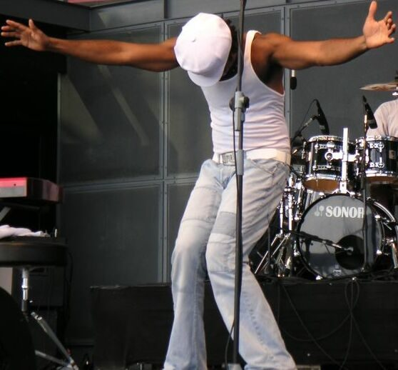

Amp Fiddler returns over the New Year



Feel like a slice of Sly Stone-style funk, soul and jazz that’s been pushed through an electronic filter? Detroit singer, songwriter and keyboardist Amp Fiddler will be bringing his six-piece band to Australia in time for the party season. Many of us caught him back in 2005 when he played that year’s Good Vibrations circuit, and he famously cut his teeth in Sly Stone’s seminal funk act Parliament before going on to spend time in the studio with everyone from Prince to Primal Scream to Jamiroquai to Moodymann. Winning plenty of fans with his debut album Waltz of A Ghetto Fly, he solidified his fan club last year with the release of Afro Strut.
Catch Amp Fiddler at the following dates…
Perth – Monday 31st December, The Rosemount
Melbourne – Tuesday 1st January, The Hot Barbeque Festival
Byron Bay – Saturday 5th January, The Great Northern
Sydney – Wednesday 9th January, Sydney Festival Becks Bar w/ Percee P